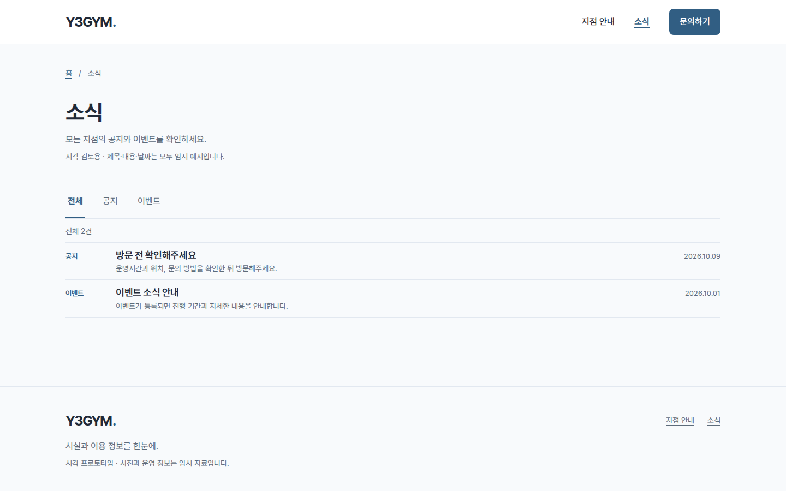
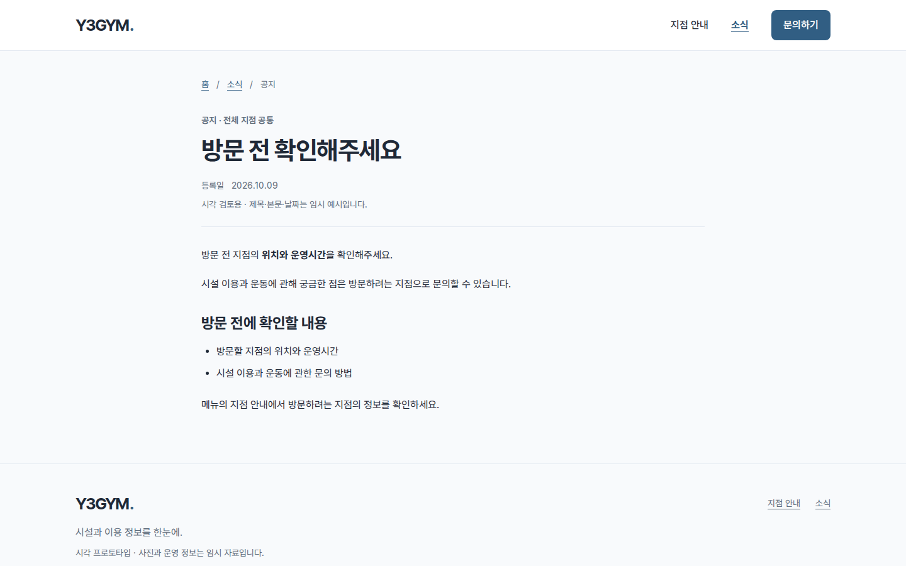
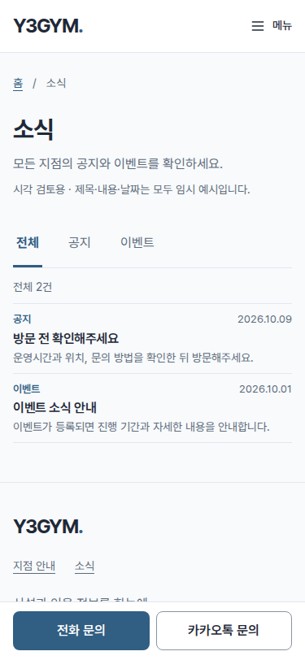
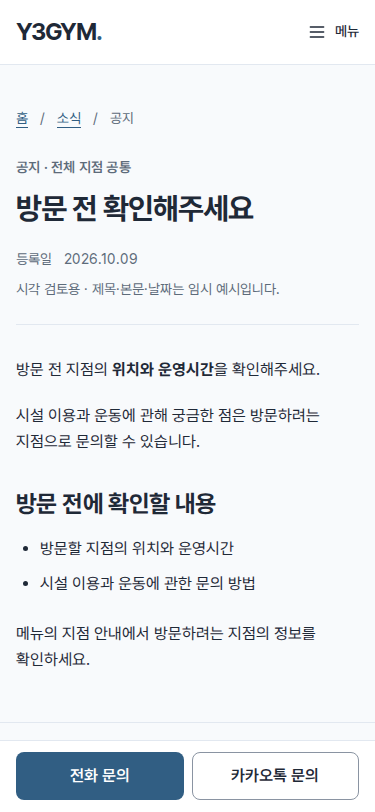
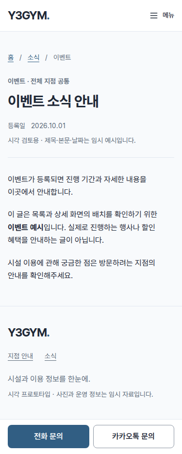
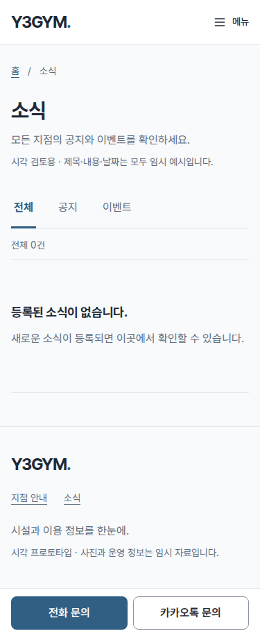

소식 목록과 상세 화면
추가 수정: 목록의 행 여백을 PC 10px·모바일 8px로 더 줄이고 제목·설명 크기도 조정했습니다. 상세 본문 아래의 문의·목록 복귀 링크는 제거한 상태를 유지합니다. 조작 버튼을 제거한 시설 자동 슬라이드도 함께 확인하세요.
승인된 A 방향을 공통 소식 화면으로 확장했습니다. 구분선이 있는 익숙한 목록과 전체·공지·이벤트 분류, 읽기 좋은 폭의 상세 본문으로 구성했습니다.
- 헤더·푸터의 소식 메뉴와 홈의 ‘소식 모두 보기’는 별도 목록으로 이동합니다.
- 분류별로 글을 보고, 상세 상단 현재 위치의 ‘소식’ 링크로 보던 목록에 돌아올 수 있습니다. 본문 하단의 별도 버튼은 제거했습니다.
- 소식은 모든 지점 공통입니다. 목록·상세·문의·홈 이동에서는 선택한 지점이 이어집니다.
- 공지·이벤트 각 1건은 기존 제목과 문구를 사용한 임시 예시입니다. 실제 행사·혜택·가격은 추가하지 않았습니다.
- 푸터는 지점 안내·소식 두 메뉴만 유지합니다. JavaScript 없이도 분류·목록·상세와 기본 탐색을 제공합니다.
목록의 밀도는 사용자의 “글 목록 통과”로 확인받았습니다. 아래에 확인 당시의 목록과 요청에 따라 하단 두 링크를 제거한 상세 캡처를 제공합니다.
PC · 목록과 공지 상세 · 1440×900




모바일 · 목록과 공지 상세 · 375×812




이벤트 상세와 빈 목록




전체 캡처와 검수
- 목록 전체: PC · 모바일
- 공지 상세 전체: PC · 모바일
- 이벤트 상세 전체: PC · 모바일
- 빈 목록 전체: PC · 모바일
- 23개 가상 글로 확인한 페이지 이동 예시 — 검수 때만 추가한 자료입니다.
- 소식 화면의 6개 화면 폭·분류·상세·복귀·지점 유지·빈 데이터·JavaScript 대체 동작
- 기존 팝업·지점·슬라이드 등 17개 상태 검수


전체 캡처는 폭을 유지한 긴 실제 뷰포트를 사용해 고정 문의 바를 맨 아래에 표시합니다. 정상 화면 높이의 가림은 별도로 검사합니다. 자동 검사 통과는 사용자 시각 승인을 대신하지 않습니다.